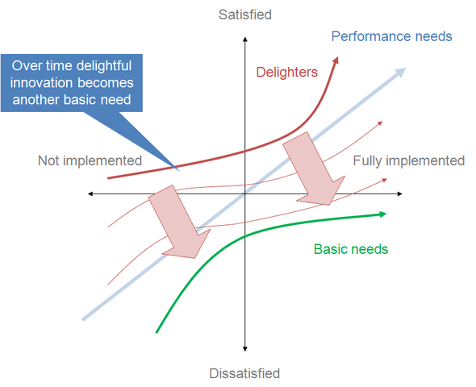
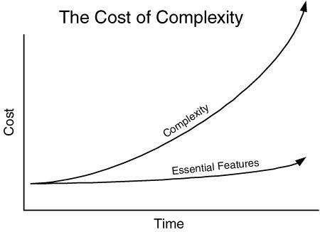

Product Ownership
Working together to deliver more value with less waste
Part 1 - Lean Product Ownership (40 mins)
- Lean Software Development
- Delivering More Value
- Reducing Costs by removing waste
- Working together effectively
- Projects or Products
- Principles and Practices/Policies
- Models of Product Ownership - Scrum, Lean, XP
Part 2 - Establishing Principles and Practices (60 mins)
- Principles of Product Ownership at River (30 mins)
- Policies for Product Ownership at River (30 mins)
Part 1
How can we meet client needs cost effectively?
Hunt the value. Discard the waste
Lean Software Development
image of popendeik book and Toyota factory7 Principles of Lean
- Eliminate waste
- Build Quality In
- Create Knowledge
- Defer Commitment
- Deliver Fast
- Respect People
- Optimise the Whole
Value
Deep Customer Understanding
Great software grows out of a mind-meld between a person who really understands the business and a person who really understands the technology
Tom Poppendieck
Kano Analysis
 Kano model showing transition over time" by Craigwbrown - Own work. Licensed under CC BY-SA 3.0 via Commons{kind=link}
Waste
Always Looking to Simplify
The Seven Wastes of Software Development
- Partially done work
- Extra Features
- Re-learning
- Handoffs
- Task Switching
- Delays
- Defects
All of these are a shared responsibility of Devs and PO
Steps to Remove Waste
- Define Problem/Gather data
- Analyse the Situation
- Create a hypothesis
- Perform Experiments
- Verify Results
- Share/Standardise/Create Policies
Ensure you are optimising the whole
People
Motivation
Dialogue
- It's not about you!
- Open not Defensive
- Offer Facts not Assumptions
- Enquiry and Curiosity over Opinion and Judgement